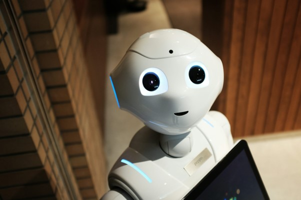

Â
 Fundamentos del Desarrollo de Software
   Â     El desarrollo de software combina lógica, creatividad y buenas prácticas para crear soluciones que  resuelvan problemas reales. Aprender a estructurar el código, diseñar bases de datos y probar  aplicaciones son pilares fundamentales.    Â
    Â
    Â
  Â
 TecnologÃas Clave
   Â-
    Â
- HTML, CSS, JavaScript     Â
- Frameworks: React, Angular, Vue     Â
- Bases de datos: MySQL, PostgreSQL, MongoDB Â Â Â Â
  Â
   Â
 El Futuro del Software
   Â     Con la llegada de la IA, la nube y la automatización, el desarrollo de software será cada vez más  colaborativo y orientado a soluciones en tiempo real.    Â
          Â